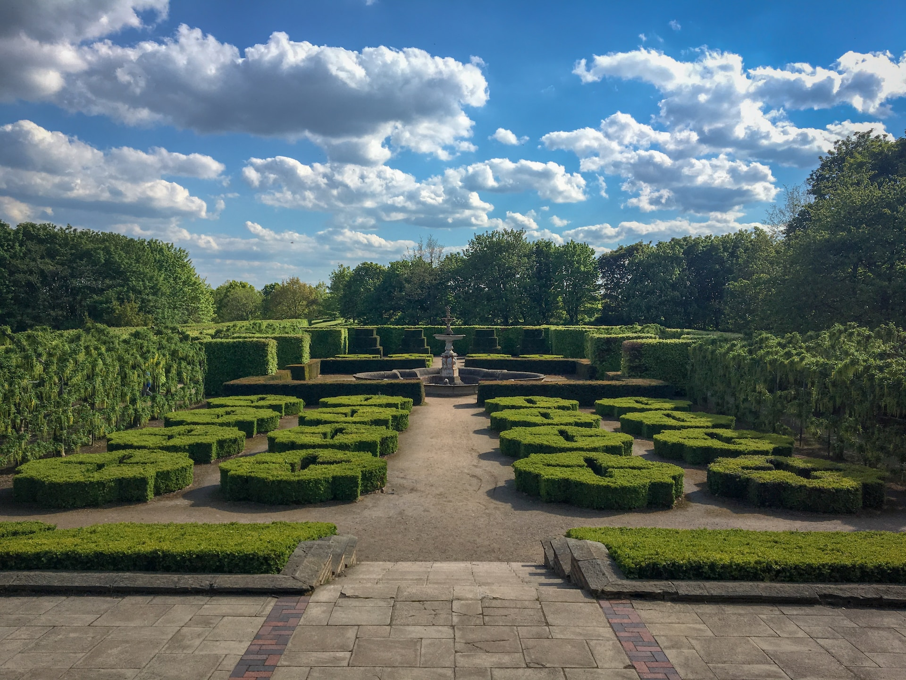
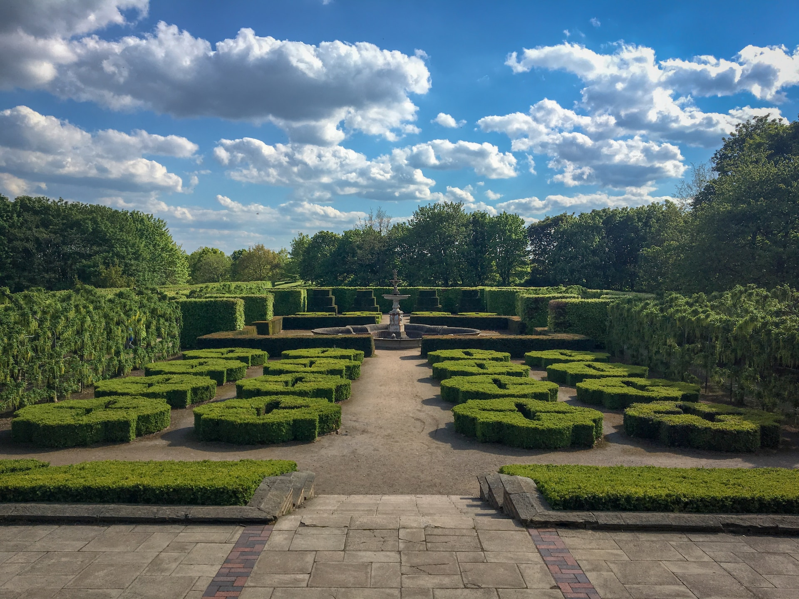

Catalodo de Ideas
dar ideas es un espacio designado en el que las personas se reúnen para compartir y generar propuestas, soluciones o conceptos nuevos relacionados con un tema específico. El objetivo principal de esta sección es fomentar la creatividad y el pensamiento innovador al explorar diferentes perspectivas y enfoques.
 
